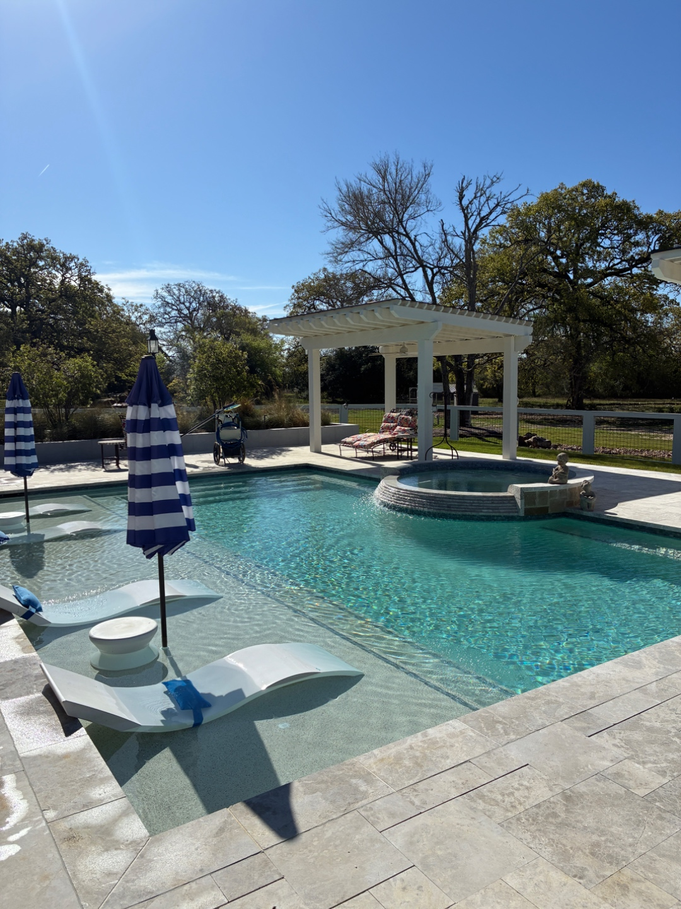
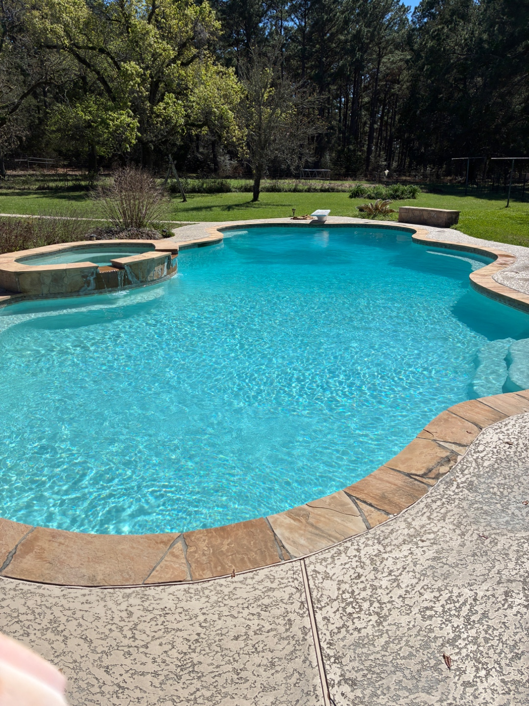
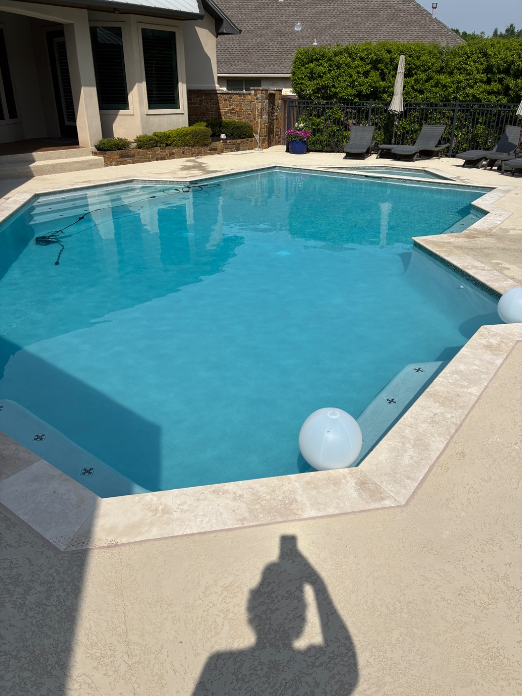

Weekly Pool Cleaning
Flat-rate weekly service with email chemistry report.
Learn moreWeekly pool cleaning, equipment repair, and chemistry management for Caldwell and the surrounding Burleson County area — residential pools, ranch pools, and commercial spas.
Caldwell pools sit a little further west than our Bryan-College Station core, and the mix of residential and rural properties means we bring extra chemistry gear and extra flexibility. We're a weekly-service company, not a drop-in company — which means your pool gets the same schedule, same tech, and same documented chemistry report every time we visit.
We regularly service Caldwell and the surrounding Burleson County area:
Don't see your neighborhood? We probably still service it — give us a call at (979) 253-4801.
Caldwell has a wider mix of city water and well water than Bryan-College Station proper. We test for iron, manganese, and hardness on the first visit and tune chemistry to your water, not a template.
Caldwell's less-tree-covered properties often run hotter water temperatures in summer — which accelerates chlorine demand. We track this and adjust stabilizer and chlorine targets accordingly.
Many Caldwell pools are older than the Bryan-College Station new-build boom. We're comfortable with legacy equipment, older pump housings, and plaster finishes that need gentler chemistry.
We don't upcharge Caldwell clients for the drive. Flat-rate weekly service, chemicals included, same as every other Brazos Valley client.
Weekly pool service in Caldwell is flat-rate with chemicals included. Pricing depends on pool size, features, and tree coverage — request a free custom quote and you'll hear back within 24 hours. Caldwell is about 30 minutes from our Bryan base and on our established weekly route.
"Responsive, professional, and our pool is always clear. Worth every penny compared to the national chains we tried before."
— homeowner, weekly-service client
Flat-rate weekly service with email chemistry report.
Learn morePumps, filters, heaters, salt cells, and automation.
Learn more48–72 hour algae recovery with a documented plan.
Learn morePre-purchase inspections for Caldwell homebuyers.
Learn more


Get a flat-rate quote tailored to your Caldwell pool in under 24 hours.